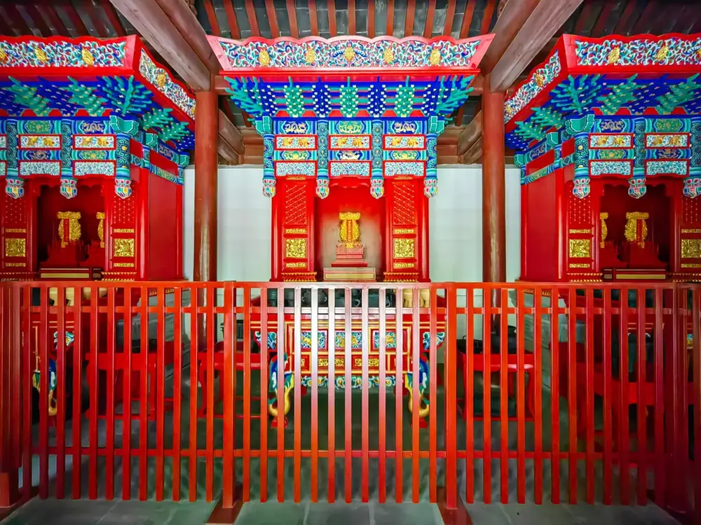

唐 · 国保

定州文庙
CONFUCIUS TEMPLE
始建于唐大中末年（约 857—858 年），河北省保存最完好、规模最大的孔庙古建筑群，2013 年列为第七批全国重点文保。前庙后学，院中古柏参天。
- 大成殿：面阔五间、单檐歇山顶、黄绿琉璃瓦，殿内孔子及四配十二哲塑像
- 东坡双槐：相传苏轼知定州时手植，近千年树龄，2025 年入选首批“国保单位·古树名木”协同保护名录
- 落星石：色赤黄如璞玉，相传为陨星所化，今置院中